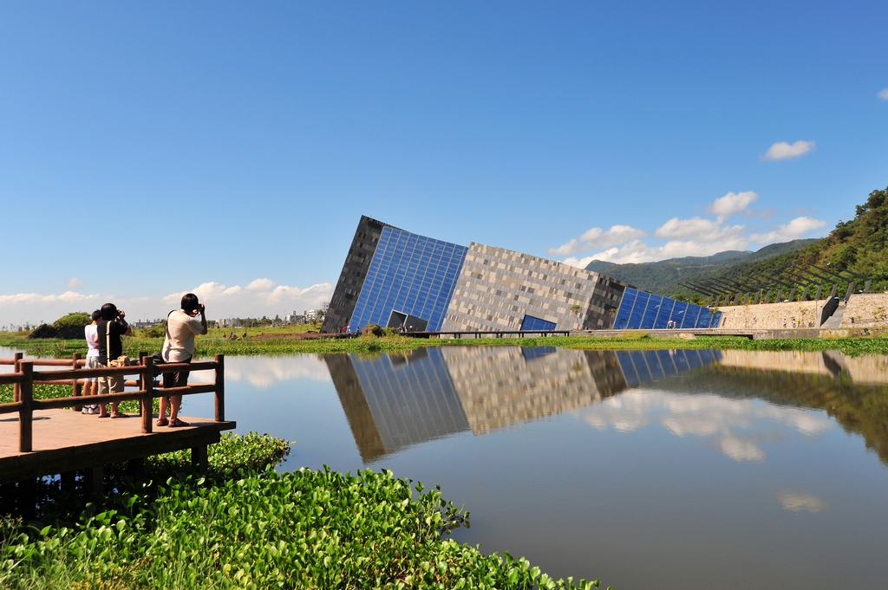
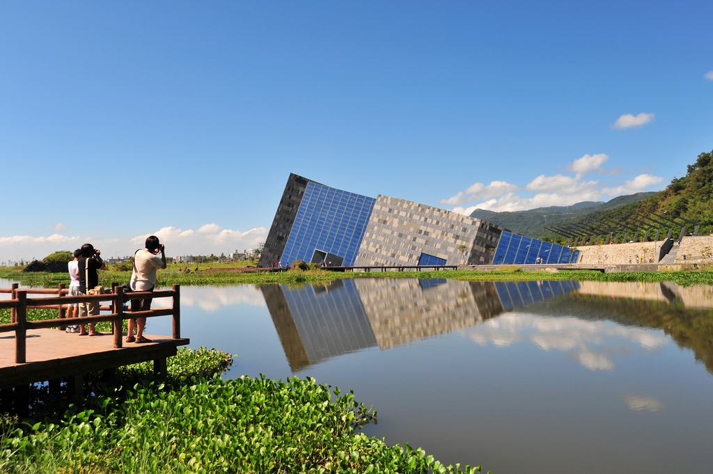

Where Is Yilan?
Yilan County sits on the Yilan Plain, a combined alluvial plain created by Lanyang River and other minor streams with a rough shape of triangle. On the three vertices of the triangle sit the Toucheng, Sanxing and Su-ao Townships with a roughly equal distance of 30 km on the three sides. The Xueshan Range sits on the northwest of Yilan County from Toucheng to Sanxing. The county is geographically divided into the cliffs and the plains. The Central Mountain Range sits to the south from Sanxing to Su'ao.
Yilan County is located in the northeastern Taiwan Island which covers an area of 2,143 km2. The longest distance from east to west is 63 km and from north to south is 74 km. From the mountain areas downwards, the land falls in altitude in the stages of mountains, alleys, alluvial plains, lowlands, swamps, sand hills and finally coastline.
What is So Special in Yilan?
Located in Lanyang Plain, Yilan is surrounded by mountains and facing the Pacific. She has so much to offer and so much to share. Hot springs mountains and seasides are just half

What Can I Do in Yilan?
Hiking and Trekking Trails
The Ancient Horse Route: Starting from Jiao River (Jiaoxi) and going upwards along the foot of the Wufeongqi peaks, there is an ancient route, called the ncient Horse Route by the locals. Before the Taipei-Yilan Highway was constructed, this route was the only means of reaching Taipei from Jiao River (Jiaoxi). Now, orange and kumquat orchards dot both sides of the route, creating lush scenery and a rustic atmosphere.
Taipingshan Forest Park is located in Datong, Yilan County, 12,000 hectares in area. The park covers the Nanhu Mountain, Sanxing Mountain and Dabajian Mountain. There are abundant cypress and pine trees and it used to be one of the three major forestry centers in Taiwan. Scenery here differs with the seasons. Visitors can come here to appreciate the flowers in spring, the sunrise and clouds in autumn. Vegetation here differs with the altitude.
Scenic spots here include Renze Hot Spring, Forest Park, Forest Tour Track, Wildlife Conservation area and Cuifeng Lake. The plants that change colors, such as maples, have brought Taipingshan beautiful views. Cherry blossoms, plum blossoms and apricot blossoms make the park exquisite scenery.

Hot Springs and Cold Springs
For a relaxing hot spring soak, visitors to Yilan County can choose between the lowland hot springs of Jiaoxi Township and the carbonic acid cold springs in Su'ao Township, one of only two cold springs in Southeast Asia. The clear and tasteless spring water pampers your skin and embraces you, body and mind, in a world of relaxation.
Situated 500 meters above sea level in Taiping Township, the Jiuzhize Hot Springs are a stopover on the road to the Taiping Mountain (Taipingshan) Forest Recreation Area. The colorless, odorless mineral water here contains calcium carbonate and is very hot-frequently above 95 degrees Celsius. Bathing in the springs leaves the skin lustrous and smooth. Visitors here can also enjoy walking on nearby forest paths and watching the birds that make this area their home.


Seaside and Beaches
The Neipi Beach is backed by mountains and faces the ocean. Its water is clear and its views are graceful. Many people have come here to have fun. This is a great place for watching sunrise, wading in water or listen to the sounds of ocean waves. More dynamic summer activities can be enjoyed here, too, such as scuba diving. But please be reminded of fierce ocean currents underneath the peaceful-looking ocean surface.
Since the Neipi Bayside Scenic Area became part of the Beibin Park, a coastal hiking trail, a scenic pavilion, a basketball court and a parking lot have been added. A variety of trees are planted here, too, such as fragrant pittosporum, Indian beech, Taiwan aglaia, silvery messerschmidia and large-leaf markingnut, to turn this place into a beautiful tourist paradise. It is highly recommended for your holiday to-visit list.
Nanfang’ao has three side-by-side narrow harbors, all dedicated to fishing craft. At the foot of the middle harbor is exuberantly ornate Nantian Temple, dedicated to Mazu, Goddess of the Sea. Construction was started in 1946 after, locals believed, the goddess saved them from disaster. On the south side of this harbor’s mouth is the raucous Nanfang’ao fish market, where boats constantly pull up to unload catch for sale at a dense array of stands, creating more vivid photo opps.


History and Culture
Yilan’s geography of plains surrounded by mountains on three sides and the ocean on the fourth makes it very suitable for agriculture, but cuts it off from other parts of Taiwan. This unique locale and identity provides a whole different cultural experiences.
The Center for Traditional Arts in Dongshan River Scenic Area has added several pieces of installation art, such as Misty Forest and Tunnel of Leaping Fish. The place is an attraction suitable for the whole family to enjoy the cultural tour together.
Or you can pay a visit to the landmark of Yilan, Lanyang Museum, housed in a building that exists in harmony with the earth. The main structure of the building is situated at the northwest side of the ruins in Wushigang Harbor; its aim is to conserve the wetland’s natural resources.
 
